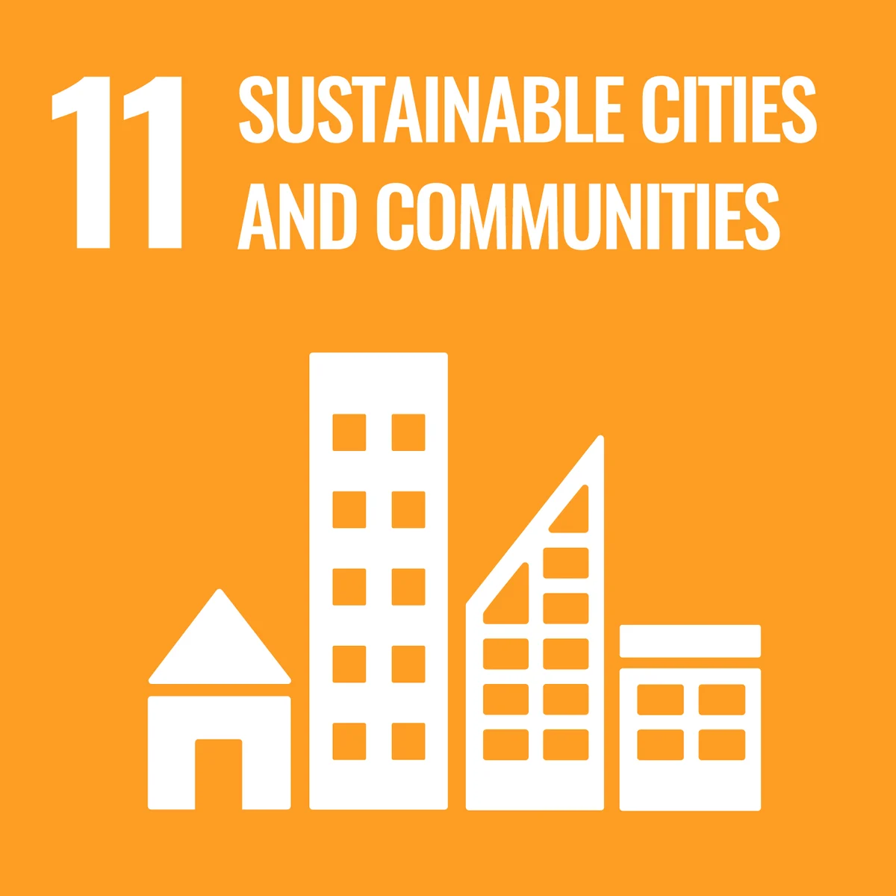
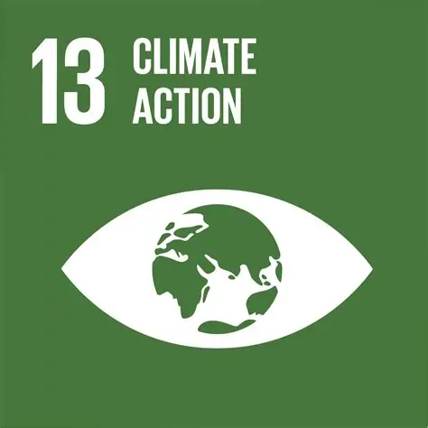

Small habits that save lives in Myanmar.
Let's find out the solutions on how to predict and prepare for disasters together with tech!
Myanmar is highly vulnerable to natural hazards. Traditionally, we could only react after a disaster struck. Today, Information and Communication Technology (ICT) allows us to shift our approach, giving communities the early warnings they need to save lives and protect livelihoods.
Explore how technology helps us monitor and mitigate the risks of nature's most powerful forces.
Learn About The Causes & ConsequencesThe 3-step cycle of modern Disaster Risk Reduction.
Satellites, drones, and IoT sensors constantly watch the Earth for signs of danger.
AI and computers analyze the data to send early warnings to phones before a disaster hits.
Communities use these warnings to evacuate safely and reduce the damage to their homes.

Promoting disaster awareness and helping communities understand how to reduce risks.

Explaining how technology can help monitor weather-related hazards and support preparedness.
Making disaster risk information accessible through different learning levels and quizzes.